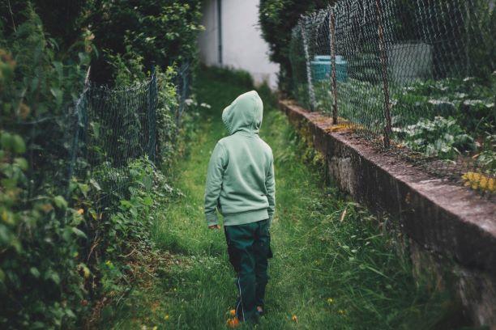

Gardening across time



Do you grow plants inside by the windows?
This is often a good place to put plants, most plants thrive here.
Do you utilize your community garden? This is a nice way to become more connected within your community.
This is often a nice way to share outside space without having to plan your own garden.
Does gardening remind you of someone?
I often plant things that were my family or friend's favorite flower. I feel connected to them by growing what they love. There are different family favorites and it is a good way to start a new family tradition.
Do you garden with family or by yourself?
I try to include my son in the gardening and it's often trial and error. Fun in the sun is our goal.
Gardening to grow food and medicine. Some leaves can be used for tea like raspberry leaves or lemon balm. I encourage you to do your own research into this!

Visitors, Image from GIPHY.com
Blossom, Image from Giphy.com
Look at what the Farmer's Almanac suggests for using up the crisp fall apples.
Fall Apple IdeasMy favorite to grow are tomatoes, roses and sunflowers.